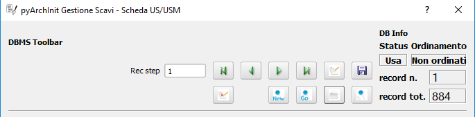
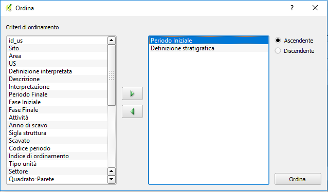
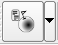

3. Il plugin pyArchInit¶
Piccola premessa¶
pyArchInit è sostanzialmente un plugin per Qgis realizzato in Python che scrive e legge dati dentro ad un database alfanumerico (con estensione spaziale) grazie ad interfacce grafiche e routines, che trasforma le vostre query in piante, report PDF, controlli sulla correttezza di immissione del dato e altro ancora.
Da questa piccola premessa noterete che vengono dati per scontati tantissimi concetti: plugin, python, database, routines...MA COSA SONO QUESTI TERMINI!??
Spesso quando proviamo a spiegare cosa fa pyArchInit vediamo di fronte a noi teste che annuiscono ma quando si arriva a dover disegnare una Unità Stratigrafica sul GIS riceviamo a volte la stessa domanda:
Ma in quale file trovo le US? In nessuno, è tutto dentro ad una Tabella del database! Avete messo i disegni dentro ad una tabella? Come è possibile?
L’esperienza ha fatto comprendere che per far diffondere il plugin la prima cosa da fare non era far capire come è fatto e come si usa pyArchInit, ma far capire quale fosse la cultura che sta alla base del software, un po’ diversa da quella a cui siamo abituati, oseremmo dire: ingabbiati.
Siamo stati abituati ad acquistare o peggio a “piratare” software coperti da licenza d’uso, perché associamo all’idea di “acquistato/acquistabile” il concetto di efficienza.
Con pyArchInit entriamo nel mondo dell’OpenSource Software, che richiede un impegno diverso nell’apprendimento e nell’uso di un programma. pyArchInit è un progetto aperto che richiede la conoscenza base di alcune sue componenti, a volte anche di programmazione e una volontà specifica di voler migliorare il prodotto. Il corretto funzionamento del sistema dipende da ogni utente senza che vi sia un responsabile. Il bello e il brutto dell’OpenSource.
3.1 La struttura del plugin¶
Il plugin è stato studiato per avere una struttura flessibile in cui ogni parte può essere sostituita, riparata o implementata in maniera abbastanza semplice. Di seguito mettiamo uno schema della struttura per permettere un’individuazione rapida dei singoli componenti.
Provare a spiegare come sia il flusso dei dati per ogni file o per ogni funzione sarebbe ridondante e rimandiamo ad una altra sede le spiegazioni tecniche di come funziona il plugin.
3.2 Introduzione alle schede¶
Il plugin offre una serie di interfacce grafiche per il data entry delle informazioni alfanumeriche provenienti da contesti archeologici e un pacchetto di layers tabellari postgres/postgis per la localizzazione del dato georeferenziato.
Il plugin ha sostanzialmente 4 ambienti gestionali: data entry del dato alfanumerico tramite interfacce grafiche; layer tabellari per il disegno degli elementi cartografici; view sql per il join dei dati alfanumerici con i dati cartografici; serie di tools per le chiamate dinamiche in tempo reale dei dati e l’elaborazione di piante topografiche.
Le tabelle per il data entry sono:
- Scheda Sito
- Scheda Periodizzazione
- Scheda Struttura
- Scheda US
- Scheda Inventario Reperti
- Scheda Campioni
- Scheda Tafonomica
- Scheda Individuo
- Scheda Determinazione del sesso
- Scheda Determinazione dell’età
- Scheda Reperti archeozoologici
- Scheda di Unità Topografica
- Scheda di Catalogazione dei media
- Scheda di gestione della documentazione
- Scheda di gestione dei thesaurus
I tools per la gestione e controllo dei dati:
- Sistema di controllo del tempo
- Sistema di esportazione delle directory per i media
- Sistema centralizzato di esportazione PDF
- Sistema di ricerca immagini simili
- Configurazione del database
- Info sul plugin
- Sistema di caricamento e backup del database
3.2.1 Toolbar singole schede¶
Breve introduzione valida per tutte le schede.
La parte alta di tutte le schede è dedicata alla pulsantiera per navigare tra i records del database: a sinistra è presente la pulsantiera per andare avanti e indietro tra i records, aggiungere una nuova scheda, salvare il record, eliminare, ricercare, ordinare e mostrare tutti i records, oltre ad un pulsante di “emergenza” per ricaricare il database.
I primi 4 pulsanti, guardandoli da sinistra verso destra, caratterizzati da una freccia verde, permettono di andare al primo record o indietro di 1 record, di navigare al record successivo o visualizzare l’ultimo. NB: NELLA CASELLA REC STEP è possibile decidere di quanti record avanzare o tornare indietro usando le frecce singole. FUNZIONE DISPOBILE AL MOMENTO SOLO PER LA SCHEDA US.
Il pulsante con la scheda bianca e una piccola penna sopra serve a mettere l’interfaccia in modalità “nuovo record”.
Per salvare la creazione di un nuovo o una modifica apportata ad un record esistente cliccare sull’icona col dischetto.
Per eliminare il record corrente cliccare sul pulsante con foglio bianco barrato da una X rossa.
Tramite il pulsante con la lente di ingrandimento e “new” è possibile mettere la scheda in modalità di ricerca, e dopo aver inserito i parametri, lanciare la ricerca dal pulsante successivo con lente di ingrandimento e “search”. La lente di ingrandimento singola serve a visualizzare tutti i record presenti in una tabella.
Il pulsate con scheda bianca apre una finestra di dialogo per impostare l’ordinamento dei dati.
Nella parte sinistra sono presenti i criteri di ordinamento. Selezionandone uno è possibile, con le frecce posizionate al centro, spostarli nella parte destra per utilizzarli come criteri di ordinamento scegliendo un ordine ascendente o discendente. Cliccando su Ordina, sarà possibile visualizzare la nostra istanza di database secondo i criteri scelti.
ATTENZIONE SE NON SI IMPOSTA ALMENO UN TIPO DI ORDINAMENTO E SI ESCE LA SCHEDA DA UN ERRORE CHE SI PUO’ IGNORARE.
Nella parte destra è possibile controllare lo stato del database: in uso, in modalità ricerca o inserimento di un nuovo record . Viene segnalato se il set di records ricercati è ordinato o meno, il numero del record corrente e il numero di records totali consultabili. Il numero di record totali si riferisce alla cosiddetta “istanza di database”, ovvero non necessariamente a tutti i record presenti nella tabella, ma al complesso di record richiamati dal database, che può ovviamente variare da uno a molti oppure tutti, a seconda della ricerca impostata. La modalità “usa” si riferisce al momento in cui è possibile consultare oppure modificare i record. L’ordinamento ci informerà se l’istanza di database è stata ordinata in base ad un criterio, mentre il numero del record, corrisponde alla posizione del record visualizzato in base all’istanza di database e al criterio di ordinamento scelto.
3.2.2 Scheda Sito¶
Alla scheda di sito si accede tramite il pulsante della Toolbar di pyArchInit:
La scheda di sito serve ad impostare il nome del luogo o del progetto in cui si verifica un’indagine. Al momento si tratta di una scheda aperta composta essenzialmente da 7 campi:
- Campo Sito: una volta salvato il nome del sito esso verrà caricato automaticamente nella lista a tendina di questa scheda e in tutte le altre schede che si appoggiano alla scheda di sito (strutture, reperti, ecc.). E’ buona norma creare prima il nome del sito per sfruttarlo nelle altre schede e collegarlo con una mappa valori a tutti i layer che usano il sito.
- Campo Definizione sito: la lista a tendina recupera i dati dal Thesaurus sigle.
- Campo Descrizione sito: campo aperto per la descrizione del sito.
- Campo Nazione: lista a tendina aperta gestita dalla GUI con il solo nome Italia.
- Campo Regione: lista a tendina aperta gestita dalla GUI con le regioni italiane.
- Campo Provincia: lista a tendina aperta gestita dalla GUI con le provincie italiane.
- Campo Comune: lista a tendina aperta gestita dalla GUI. Nessun valore inserito.

La scheda possiede una sezione Tools:
- Possibilità di caricare i layer per il disegno di tutti i layer informativi.
- Caricamento dei layer informativi legati solo al sito analizzato.
- Caricamento del layer puntuale del sito.
- Caricamento del layer puntuale in base ad una ricerca.
- Generazione arbitraria di schede US impostando il numero di schede da creare, l’area di scavo di riferimento (l’id US è composto inderogabilmente da sito, area, us), un valore di partenza scalato di una unità rispetto al primo che vogliamo far apparire; ad esempio schede da 1 a 10 di Area 2, sarà necessario impostare 10, 2 e come numero di partenza 0.

Problemi e miglioramenti: Non possiede una esportazione PDF della scheda di sito. E’ in corso la realizzazione di un sistema di esportazione dei report dell’intero sito.
3.2.3 Scheda US/USM¶
Alla scheda US/USM si accede tramite il pulsante della Toolbar di pyArchInit:

La scheda US, è un adattamento della scheda ministeriale emessa dall’ICCD.
È divisa in varie sezioni a seconda della tipologia di dato.

Nella porzione in alto fissa, sono presenti i campi per l’identificazione dell’US/USM e relativi dati di localizzazione topografica all’interno del sito:
- Campo sito: la lista a tendina recupera i dati dalla Scheda Sito. Campo obbligatorio per l’ID.
- Campo Area: lista di valori chiusa controllata dalla GUI di tipo numerico. Campo obbligatorio per l’ID.
- Campo US/USM: Campo aperto per l’assegnazione del numero di US. Solo Numerico. Campo obbligatorio per l’ID.
- Campo Unità Tipo: Campo chiuso per l’assegnazione del tipo di US: US oppure USM
- Campo Settore: Campo aperto per poter segnalare il settore di scavo.
- Campo Quadrato/parete: Campo aperto per poter segnalare il quadrato di scavo o la parete dell’USM.
- Campo Ambiente: Campo aperto per poter segnalare l’eventuale ambiente di scavo. Può ripetere il valore dell’Area di scavo, oppure vi si può assegnare un Ambiente di scavo. Non identifica necessariamente un ambiente antico, ma anche una divisione odierna dello scavo.
- Campo Saggio: Campo aperto per poter segnalare se l’US appartiene ad un saggio di scavo.
- Campo Definizione stratigrafica: Campo con lista a tendina aperta. Progettato per riprendere i dati dal Thesaurus che deve essere implementato, viene lasciato aperto per poter permettere differenti valori da quelli presenti. Si tratta della definizione oggettiva dell’US/USM.
- Campo Definizione interpretata: Campo con lista a tendina aperta. Progettato per riprendere i dati dal Thesaurus che deve essere implementato, viene lasciato aperto per poter permettere differenti valori da quelli presenti. Si tratta della definizione basata sull’interpretazione dell’US/US.
Dati descrittivi
Sezione per l’inserimento della descrizione stratigrafica dello strato e della sua interpretazione estesa.
- Campo descrizione: Campo aperto per la descrizione oggettiva dell’US/USM. Non deve contenere dati interpretativi. Non è permessa la ricerca al suo interno.
- Campo interpretazione: Campo aperto per la descrizione interpretativa dell’US/USM. Non è permessa la ricerca al suo interno.
- Campo elementi datanti: Campo aperto per la segnalazione di eventuali materiali datanti. Non è permessa la ricerca al suo interno. ATTENZIONE: NON SI SOSTITUISCE ALLA SCHEDATURA DEI REPERTI CHE VA FATTA IN INVENTARIO MATERIALI.
USM
Sezione dedicata alla descrizione di una Unità Stratigrafica Muraria.

- Campo funziona statica: Campo aperto per la segnalazione della funzione statica.
- Campo unità edilizia riassuntiva: Campo aperto per la segnalazione della’unità edilizia riassuntiva.
- Campo lavorazione: Campo aperto per la segnalazione del tipo di lavorazione dell’USM.
- Campo reimpiego: Campo aperto per la segnalazione della presenza di materiale di reimpiego.
- Campo posa in opera: Campo aperto per la segnalazione della tecnica di posa in opera.
- Campo quota min (metri): Campo aperto per la segnalazione della quota minima.
- Campo quota max (metri): Campo aperto per la segnalazione della quota massima.
Sottosezione giunti
- Campo spessore giunti: Campo aperto per la segnalazione della spessore giunti.
- Campo letti di posa: Campo aperto per la segnalazione della spessore dei letti di posa.
- Campo Altezza modulo 5 corsi: Campo aperto per la segnalazione dello spessore di 5 corsi.
Sottosezione caratteristiche del legante
- Campo Consistenza: Campo aperto per la segnalazione della consistenza del legante.
- Campo Colore: Campo aperto per la segnalazione del colore del legante.
- Campo Aggreganti: Campo aperto per la segnalazione del tipo di aggreganti.
Sottosezione Caratteristiche dei materiali da costruzione
- Campo consistenza e texture: Campo aperto per la segnalazione della consistenza e texture dei materiali impiegati.
- Campo colore: Campo aperto per la segnalazione del colore dei materiali impiegati.
- Campo aggregati: campo multiplo per segnalari gli aggregati contenuti nei materiali. Non è permessa la ricerca al suo interno.
Dati di scavo, Periodizzazione, Rapporti stratigrafici, Struttura

Sezione per l’inserimento della Periodizzazione iniziale e finale, attività e sigla della struttura di appartenenza. Qui vengono anche inseriti altri dati come l’anno di scavo e il metodo di scavo utilizzato. Infine, con un formato totalmente innovativo, vengono segnalati i singoli rapporti stratigrafici, presentati in forma di tabella, dove ogni singola riga rappresenta un rapporto stratigrafico. NB: 1 RAPPORTO STRATIGRAFICO 1 RIGA NEL CAMPO.
Il periodo e la fase sono divisi in periodo/fase iniziale e finale; se uno strato si genera e finisce la sua funzione all’interno di un periodo, solo la periodizzazione iniziale sarà compilata. Nel caso lo strato rimanga in vita per più fasi, avremo anche una periodizzazione finale. Uno script apposito prende dalla scheda di Periodizzazione i singoli codici e genera una stringa alfanumerica che può essere interrogata da pyArchInit per generare in automatico le piante di fase. L’US dell’esempio rimane in vita per tre fasi, dalla 3-3 alla 3-1, quindi riceverà 3 codici di periodo, come sotto è possibile vedere: 5/6/7.
Per le modalità di generazione del codice di periodo vedere la sezione Tools della scheda US.
- Campo periodo iniziale: campo aperto per la segnalazione in numero arabo del periodo iniziale.
- Campo fase iniziale: campo aperto per la segnalazione in numero arabo della fase iniziale.
- Campo periodo finale: campo aperto per la segnalazione in numero arabo del periodo finale.
- Campo fase finale: campo aperto per la segnalazione in numero arabo della fase finale.
- Campo attività: campo aperto per la segnalazione dell’attività.
- Campo struttura: campo aperto per la segnalazione della struttura. ATTENZIONE: il campo dovrà essere modificato perchè dovrà poter accogliere in una lista a tendina sia la sigla di una struttura preventivamente schedata nella scheda di Struttura e per poter segnalare più Strutture a cui essa appartiene. Al momento è possibile ricorrere a “/” per suddividere le sigle di Struttura ed eseguire in pyarchinit_us_view e pyarchinit_quote_view una ricerca di tipo like per poter andare a sfruttare la ricerca della presenza di una sigla tra “/”.
- Campo scavato: Lista si/no per segnalare se l’US è stato totalmente scavata.
- Campo anno: campo aperto per segnalare l’anno di indagine dell’US.
- Campo rapporti stratigrafici: campo multiplo in cui è necessario specificare i singoli rapporti stratigrafici (vedi sopra).
ATTENZIONE IL CAMPO RAPPORTI STRATIGRAFICI E’ DIRETTAMENTE CONNESSO CON IL SISTEMA DI REALIZZAZIONE DEL MATRIX E DELL’ORDINE DEI LAYER. NON ESSENDO UNA TABELLA RELAZIONALE, QUALORA SI DECIDA DI RENDERLA UNA TABELLA SEPARATA, ANDRA’ MODIFICATO TUTTO IL CODICE PRESENTE NELLE VARIE SEZIONI MATRIX E ORDINE DEI LAYER.
Dati fisici e dati schedatura
Sezione per l’inserimento dei dati fisici dell’Unità Stratigrafica quali: formazione, colore, consistenza, stato di conservazione, inclusi e campionature. Sotto viene segnalato lo schedatore e la data di redazione della scheda.

- Campo formazione: lista a tendina per la segnalazione della formazione dell’US: naturale o antropica.
- Campo Colore: lista a tendina per la segnalazione del colore: controllato dalla GUI in futuro dovrebbe essere collegato al Thesaurus Sigle.
- Campo Consistenza: lista a tendina per la segnalazione della consistenza: controllato dalla GUI in futuro dovrebbe essere collegato al Thesaurus Sigle.
- Campo Stato di conservazione: lista a tendina per la segnalazione dello stato di conserevazione.
- Campo inclusi: campo multiplo per la segnalazione degli inclusi della matrice. ATTENZIONE: non vanno segnalati eventuali reperti se non si ritiene che essi facciano parte degli inclusi. Per esempio ceramica sbriciolata volontariamente per aumentare l’impermeabilizzazione dell’US, va segnalata in questo campo e potrà anche essere schedata nell’Inventario Materiali. Un boccale rinvenuto in una US NON E’ un incluso. Eventualmente potrebbe essere utile segnalare un campo di Nr. Inventario qualora un incluso possa essere schedato come materiale.
- Campo campioni: campo multiplo per la segnalazione dei campioni raccolti. ATTENZIONE: non si sostituisce all’inventario Campioni nella scheda apposita. Potrebbe essere utile aggiungere un campo per segnalre il numero di Campione assegnato nella relativa scheda.
- Campo Schedatore: lista a tendina aperta per la segnalazione dello schedatore.
- Campo Data di schedatura: campo data per la segnalazione della data di schedatura.
Documentazione

In questa apposita sezione è possibile segnalare i singoli tipi di documentazione prodotti: piante, sezioni, fotografie, diapositive, ecc.
!!!ATTENZIONE!!! Al momento si tratta di un sistema work in progress. Lo scopo sarebbe quello di assegnare 1 riga del campo per ogni singola tipologia di documentazione prodotta e schedata nella scheda di Documentazione (realizzata da Simone Berto). Quindi ogni riga corrisponde ad una sola pianta oppure un prospetto oppure una sezione e così via, segnalando il tipo di documentazione e il numero di riferimento che costituiscono gli ID della scheda di Documentazione. Al momento il sistema risulta incompleto. NON E’ POSSIBILE FARE RICERCHE AL SUO INTERNO.
3.2.3.1 Funzioni della scheda US¶
La scheda US possiede una serie di funzioni che vanno ad automatizzare alcune delle operazioni che si compiono nel corso della catastazione ed elaborazione dei dati archeologici al fine di aumentare il controllo sull’integrità del dato e la validità dell’output. Al momento per la scheda US sono disponibili le seguenti funzioni:
*sistema di generazione di piante composite a partire dalle query della scheda US; *apertura delle schede US da selezione su base GIS; *visualizzazione su GIS della planimetria dell’US del record corrente; *visualizzazione della pianta all’interno della scheda US; *creazione in automatico del codice di periodizzazione dell’US; *creazione dell’indice di ordine di successione stratigrafica; *controllo automatico dei rapporti stratigrafici; *esportazione del matrix; *esportazione schede e indice delle US in formato PDF.
- Sistema di generazione di piante composite a partire dalle query della scheda US
- Andate nella sezione Tools della scheda US e cliccare sul pulsante “Visualizzazione GIS”; apparirà un messaggio che vi informa che le vostre ricerche saranno trasformate in piante di scavo.

- Dopo aver cliccato su “New Search” impostate una ricerca (in questo caso cerchiamo la struttura TB01 – una tomba, di uno scavo di Ravenna).

- Lanciate la ricerca cliccando su “Search!!!”.

- Sul GIS vengono caricate le US corrispondenti alla ricerca, caratterizzate in base agli stili pre-impostati di Qgis (vedi capitolo sugli stili); nella scheda US invece sono disponibili i singoli record.

- Apertura delle schede US da selezione su base GIS
Sul livello pyarchinit_US_view eseguire una selezione nella porzione di scavo che desiderate.

Oppure, aprite la tabella del livello e utilizzate il query builder di Qgis per realizzare la ricerca che desiderate: in questo caso abbiamo selezionato uno scavo archeologico e tutte le US che per definizione stratigrafica riportano la dicitura: “struttura in muratura”.


Aprite la scheda US di pyArchInit e andate alla sezione Tools. A questo punto cliccate sul pulsante “Show selected Features”. La scheda aprirà i records corrispondenti alla selezione.


- Visualizzazione su base GIS dell’US corrente
Quando ci si è posizionati sull’US che si desidera visualizzare, andare nella sezione tools e cliccare sul pulsante “Disegna US”.


In Qgis verrà disegnata l’US corrispondente.

!!! ATTENZIONE !!! AL MOMENTO QUESTO SISTEMA NON FUNZIONA PIU’ PER MODIFICA DELLE API DI QGIS!!! - Visualizzazione della pianta all’interno della scheda US È possibile visualizzare la pianta di una US andando nella sezione Tools e cliccando sul pulsante “Preview pianta US” apparirà un messaggio che vi avvertirà che ogni US consultata sarà caricata nell’apposita sezione.
Andando nella sezione “Piante” della scheda US sarà possibile visualizzare la pianta dell’US, con le caratterizzazioni e le quote. Posizionandosi sulla pianta è possibile zoomare con la rotella del mouse e selezionando lo strumento di spostamento (icona con la manina) è possibile navigare in ogni direzione.
- Creazione in automatico del codice di periodizzazione dell’US
Dalla scheda US è possibile creare il codice di periodizzazione dell’US.
Come spiegato nel capitolo inerente alla scheda di Periodizzazione e nella parte della scheda US riguardante la periodizzazione, una volta assegnato un periodo/fase iniziale all’US e un eventuale periodo finale, basta cliccare nella sezione Tools il pulsante “Crea codice Periodo”.


Sarà assegnato il valore del codice periodo dalla periodizzazione finale all’iniziale, divisi da uno slash per motivi prettamente informatici. Se uno strato vive dal periodo 2.1 fino al 2.3, il codice di periodizzazione sarà: 2/3/4
| Periodo | Fase | Codice |
|---|---|---|
| 2 | 1 2 | |
| 2 | 2 3 | |
| 2 | 3 4 |
Risultato: 2/3/4

La sintassi del valore inserito nel campo, serve a pyArchInit per poter realizzare le query di richiamo delle piante di fase, attraverso una sintassi specifica:
cont_per = ‘3’ OR cont_per LIKE ‘3/%’ OR cont_per LIKE ‘%/3’ OR cont_per LIKE ‘%/3/%’

Sul campo cont_per viene cercato il codice di periodizzazione in quattro modalità:
1. cont_per = valore: trova tutte le US che vivono solo nel periodo preso in esame; cont_per LIKE ‘valore/%’: trova tutte le US che iniziano in un certo periodo e arrivano fino ai periodi successivi; 3. cont_per LIKE ‘%/valore’: trova tutte le US che finiscono in un certo periodo e iniziano nei periodi precedenti; 4. cont_per LIKE ‘%/valore/%’: trova tutte le US che afferiscono ad un periodo intermedio tra un periodo iniziale e uno finale.

- Creazione dell’indice di ordine di successione stratigrafica
L’indice di successione stratigrafica è stato ideato per poter ovviare alla visualizzazione del GIS, che sovrappone i poligoni in base al loro ordine di immissione all’interno del database. Viene generato in automatico cliccando nella sezione Tools sul pulsante “Ordine Stratigrafico”:
È stato realizzato un algoritmo (al momento altamente in via di sviluppo) che crea un ordine di successione stratigrafica basato sui rapporti stratigrafici. Ogni US assume un valore univoco in base alla sua posizione nella stratigrafia e dai rapporti che ha con altre US. Per esempio, se 1 copre 2, 2 copre 3 e 4, ma 3 e 4 non hanno rapporti tra di loro lo script genererà i seguenti valori:
US Rapporto Ordine di successione stratigrafica 1 Copre 2 0 2 Copre 3 e 4 1 3 Coperto da 2 2 4 Coperto da 2 3
Questo permetterà alla View SQL di visualizzare su base GIS le geometrie degli strati nel loro ordine stratigrafico originario, senza doversi preoccupare delle modalità di disegno delle US.
Il layer di inserimento delle Unità Stratigrafiche (pyunitastrigrafiche) alla fine della digitalizzazione di tutte le US relative ad una fornace Il layer di visualizzazione delle Unità Stratigrafiche (pyarchinit_us_view) dopo la generazione dell’ordine stratigrafico
- Controllo automatico dei rapporti stratigrafici
Nella sezione Tools, selezionando uno scavo, è possibile eseguire il controllo sui rapporti stratigrafici Al momento viene generato un semplice report di testo in cui si segnala se la scheda corrispondente esiste o se il rapporto stratigrafico è rispettato. Riportiamo di seguito un esempio di controllo lanciato su uno scavo a fine giornata: Report controllo Rapporti Stratigrafici - Sito: Via Cignani, 18 Rimini Sito: ‘Via Cignani, 18 Rimini ‘, #Area: ‘1’, #US: 2 Coperto da US: 15: Rapporto non verificato Sito: ‘Via Cignani, 18 Rimini ‘, #Area: ‘1’, #US: 2 Taglia US: 16: Rapporto non verificato Sito: ‘Via Cignani, 18 Rimini ‘, #Area: ‘1’, #US: 1007 Taglia US: 977: Scheda US non esistente Sito: ‘Via Cignani, 18 Rimini ‘, #Area: ‘1’, #US: 256 Riempie US: 255: Scheda US non esistente …
Il controllo lascia all’utente “l’incombenza” di dover andare a verificare se vi sia errore di immissione dati, di dimenticanza nell’aggiungere un rapporto o errori dovuti alla digitazione. Il rapporto viene salvato all’interno della cartella pyarchinit_Report_folder all’interno del vostro utente.
TODO Aggiungere il sistema di controllo topografico dei rapporti
- Esportazione del matrix ‘quasi’ di Harris
È possibile realizzare dei diagrammi stratigrafici che espongano la successione stratigrafica di qualsiasi istanza del database dopo una ricerca. Il sistema esporta due formati: un’immagine raster in .png e un vettoriale .svg modificabile. L’aspetto del matrix ovviamente tende ad essere ordinato quante meno US sono presenti. Tuttavia un primo tentativo di migliorare l’aspetto del diagramma ottenuto è stato rappresentato dall’aggiunta del raggruppamento per insiemi delle US basate sulla periodizzazione. Dopo aver realizzato una ricerca sulla scheda US cliccare sul pulsante “Export Matrix”. Il matrix viene salvato all’interno della cartella pyarchinit_Matrix_folder all’interno del vostro utente.
1.Viene richiamata a GIS una struttura ed esportato il matrix:
- Viene esportato il matrix in formato .png e .svg e aperti rispettivamente per una ulteriore fase di editing con i programmi open source GIMP
e Inkscape.
- Esportazione schede e indice delle US in formato PDF
È possibile esportare sia le singole schede che l’indice delle US basandosi su qualsiasi ricerca o criterio di ordinamento. Alcuni dati vengono presi direttamente dalla us_table, mentre altri, come la quota minima e massima, sono ricavati per relazione dalle features dei layers.
3.2.4 Scheda Periodizzazione¶
La scheda di Periodizzazione serve a definire la cronologia relativa della stratigrafia, scandendola in periodi e fasi. Un periodo di un sito archeologico può essere variabile a seconda del contesto, ma in linea di massima serve a specificare un luogo per la sua definizione d’uso all’interno di un determinato lasso di tempo. Per esempio una villa di epoca romana che diviene in seguito un cimitero e infine una pieve, avrà sostanzialmente tre periodi:
*Periodo I: VI – VIII secolo – Pieve con battistero e cimitero annesso *Periodo II: VI-VII secolo – Riuso cimiteriale del sito *Periodo III: I-V secolo d.C. - Villa romana
All’interno di questi periodi potranno essere individuate le singole fasi di uso, in base ad espansioni o modifiche degli ambienti, aggiunta di infrastrutture, momenti di abbandono interni al periodo ecc.
*Periodo 1: VI – VIII secolo – Pieve con battistero e cimitero annesso
*Fase 1: abbandono *Fase 2: modifica dell’orientamento della pieve *Fase 3: primo insediamento plebano
*Periodo 2: VI-VII secolo – Riuso cimiteriale del sito *Fase 1: massima di espansione *Fase 2: impianto del primo cimitero
*Periodo 3: I-V secolo d.C. - Villa romana *Fase 1: restringimento dell’insediamento *Fase 2: espansione e aggiunta di nuovi ambienti *Fase 3: primo impianto della villa
Come si può intuire dalla soprastante scansione cronologica, i periodi sono definiti dal più recente al più antico da un numero intero che va da n a n+1, per poter sfruttare i numeri a livello informatico per gli algoritmi di ordinamento e per poter aggiungere periodi e fasi più antiche, lasciando aperta la ricerca. Istintivamente infatti si tenderebbe ad assegnare il numero più basso al periodo più antico, tuttavia questo metterebbe un punto fermo nell’analisi, nel caso emergessero periodi più antichi che obbligherebbero o a rivedere l’ordinamento dei periodi oppure ad assegnare numeri negativi al di sotto Periodo 1. All’interno di un periodo le fasi vengono definite con il numero più basso per la più antica e con la cifra più alta per la più recente. Alla periodizzazione relativa è possibile agganciare una cronologia assoluta, nel nostro caso dei numeri interi legati al sistema fissato sulla nascita di Cristo. Semplicemente i numeri avanti Cristo dovranno assumere un valore negativo. È possibile anche assegnare una cronologia assoluta di tipo alfanumerico, in cui definire tramite una stringa di testo a quale cronologia vogliamo riferirci; ad esempio un periodo/fase che data tra il -199 e il 150, potrà essere definito come inizi II secolo a.C. - prima metà del II secolo d.C..
In un apposito campo è possibile andare ad inserire la continuità periodo, un codice definito dall’utente in fase finale di interpretazione dei dati; è un numero intero positivo, che va dal numero 1 fino ad n, dal periodo più recente fino al più antico. Tale numero permette attraverso apposita query di richiamare in automatico tutte quelle US formatesi in un certo periodo o che fino a quel periodo continuano ad esistere. Mediante un pulsante unico è possibile richiamare tutte le US che afferiscono a tale continuità di periodo. Ad esempio un pavimento della fase più antica che ha come codice di continuità periodo 5, continua ad essere utilizzato fino al periodo successivo che ha per numero 3. Uno script genera nella scheda US il codice per poter richiamare tale pavimentazione in tutte le fasi, dalla prima in cui compare alle intermedie (si veda a tal proposito la sezione periodizzazione della scheda US, in cui viene esposto il concetto di periodo iniziale e finale).
3.2.5 Scheda Struttura¶
La scheda di struttura oltre ad assegnare una sigla e una definizione strutturale ad un raggruppamento di US, permette di andare a specificare in una serie di sezioni apposite i singoli elementi che la costituiscono. La parte alta dell’interfaccia presenta tre campi che fanno da identificatore: Sito, Sigla Struttura, Numero; la numerazione è progressiva a partire dalla coppia di valori Sito+Sigla struttura, del tipo:
*Sito 1, TB1 *Sito 1, TB2 *Sito 1, TB3 *Sito 1, ED1 *Sito 1, ED2 *Sito 1, FO1
Al di sotto dei campi che costituiscono l’identificatore di struttura, ci sono altre tre caselle in cui è possibile andare a categorizzare il tipo di struttura schedata. Al momento il sistema è in via di elaborazione e le liste sono lasciate aperte. Nel primo campo si esplicita la categoria alla quale si riferisce, nel secondo la tipologia di struttura e infine la sua definizione. Un esempio che riportiamo qua sotto è riferito ad una Tomba con cassa:
Categoria: Struttura funeraria Tipologia: Tomba Definizione: Tomba a cassa
Dati descrittivi Nella sezione dati descrittivi viene inserita la descrizione tecnica della struttura insieme alla sua interpretazione.
Periodizzazione e rapporti Qui si va a segnalare periodi e fasi iniziali e finali specificati nella scheda di Periodizzazione per meglio definire inizio e fine della struttura. Al di sotto è possibile inserire i rapporti diretti con altre strutture, segnalando tipo di rapporto, sito, sigla di struttura e numero.
Elementi costruttivi È una sezione altamente sperimentale, in cui è possibile andare ad elencare i singoli materiali di cui è composta la struttura, gli elementi strutturali e tutti i tipi di misure.
3.2.5 Scheda Inventario Reperti¶
La scheda, al momento molto semplificata e in via di sviluppo, permette di schedare qualsiasi tipologia di materiale rinvenuto. L’identificatore è un numero progressivo e univoco all’interno di un singolo sito. Quindi ogni reperto riceve un numero indipendentemente dalla classe di materiale a cui appartiene. In futuro è previsto lo sviluppo di un sistema più complesso di identificatori. Una volta inserito sito e numero di inventario, è possibile definire Tipo di reperto, Classe del materiale e Definizione.
Esempio: Tipo di reperto Classe materiale Definizione reperto Reperto ceramico Aroma grezza Olla Reperto vitreo Vetro blu Bicchiere Reperto litico Selce Raschiatoio
Dati descrittivi Nella sezione dati descrittivi viene segnalato lo stato di conservazione del reperto, la datazione letterale estesa, il tipo e la descrizione.
Dati quantitativi Sezione per l’inserimento dei dati quantitativi: nella prima tabella è possibile specificare il tipo di elementi rinvenuti (bordi, colli, fondi, pareti, frammenti compositi) insieme all’unità di misura e alla quantità; ad esempio orlo, frammenti, 12; oppure fondo, frammenti, 3 e così via. A lato è presente un campo totale frammenti con un pulsante di calcolo, che dà all’utente due possibilità: calcolare il totale dei frammenti del record corrente, oppure di tutta l’istanza di database al momento del calcolo. Nella seconda tabella possono essere inserite le misurazioni: tipo di misura, unità di misura e quantità; qui possiamo andare ad inserire varie tipologie di misure a seconda delle necessità: altezza massima, diametro fondi e orli, spessori, ecc..
Tecnologie Nella tabella possono essere inserite le tecnologie riconoscibili sul reperto; nell’ordine vengono segnalati il tipo di tecnologia, la posizione sul reperto, il tipo di reperto (intero, frammento, ecc.), unità di misura e quantità.
Riferimenti bibliografici La tabella di questa sezione permette la schedatura di eventuali riferimenti bibliografici.
Riferimenti stratigrafici e magazzino Sezione per la schedatura dell’US di provenienza dei reperti e dei dati di magazzino.
Quantificazioni La sezione quantificazioni, al momento in corso di sperimentazione, permette di realizzare semplici istogrammi direttamente all’interno della scheda, senza la necessità di spostarsi su altri programmi. È possibile al momento quantificare per Forme minime e Frammenti, qualsiasi istanza di database e sfruttando come parametri tutti i campi presenti nella scheda, al di fuori di quelli presenti nelle sottotabelle. Vediamo ora nel particolare la realizzazione di una quantificazione:
1 - Dal pannello quantificazioni cliccare sul pulsante: Impostazione quantificazione
2 - Selezionare i parametri in base ai quali la quantificazione verrà realizzata. Dal pannello di sinistra (1) selezionare un parametro alla volta e tramite i tasti (2) spostarlo nel pannello di destra (3), selezionare una tipologia di quantificazione (4) e cliccare sul pulsante “Quantifica” (5).
3 - Nel pannello apparirà l’istogramma. Sovrapposta alle singole barre vi sarà un’etichetta che rappresenta i parametri scelti e il valore assegnato alla barra.
4 - Dal dischetto “Salva” è possibile salvare il grafico in formato .svg.
5 - Aprendolo con Inkscape sarà possibile modificarlo a nostro piacimento:
All’interno del vostro Utente, troverete la cartella pyarchinit_Quantificazioni_folder, che contiene un file .csv relativo alla quantificazione appena eseguita e sfruttabile attraverso un qualsiasi foglio di calcolo, come ad esempio Calc di OpenOffice:
Esportazione PDF Dalla sezione Tools, mediante il pulsante di esportazione PDF, è possibile esportare le singole schede di reperto.
3.2.6 Scheda Tafonomica¶
La scheda tafonomica si configura al momento come una scheda intermedia tra la scheda di struttura e quella di individuo. Si approda alla scheda di sepoltura, dopo aver definito la struttura in cui è stato deposto l’individuo (da una semplice fossa nel terreno ad una monumentale tomba etrusca) e aver assegnato un numero di identificazione all’inumato nella scheda Individuo.
Dati descrittivi I dati descrittivi contengono una serie di campi per la descrizione estesa di alcune caratteristiche della sepoltura: descrizione e interpretazione. Una serie di caselle permettono di segnalare vari dati puntuali: presenza di segnacoli, del canale libatorio, di oggetti depositati all’esterno della sepoltura, tipo di copertura e tipo di contenitore dei resti. Un ultimo campo è deputato allo stato di conservazione complessivo della tomba. In basso due campi servono a segnalare l’asse della tomba e il suo azimut.
Corredo Viene segnalata la presenza del corredo e nella tabella sottostante sono segnalati i singoli numeri di reperto, il tipo di corredo e una breve descrizione. Al di sotto un campo aperto permette di descrivere in maniera estesa l’intero corredo funerario.
Resti osteologici Sezione dedicata ai resti osteologici dell’individuo presente nella sepoltura: lunghezza in metri dello scheletro se presente, posizione dell’inumato, posizione del cranio, tipo di composizione degli arti superiori e inferiori, oltre a campi per segnalare se lo scheletro è disturbato, completo e in connessione.
Caratteristiche Si tratta di una sezione per la schedatura di tutte quelle caratteristiche non prevedibili di una sepoltura. È possibile inserire le caratteristiche e segnalarne la posizione all’interno della sepoltura.
3.3 Il sistema di livelli informativi¶
pyArchInit è stato pensato per poter gestire i dati cartografici necessari all’interno della ricerca archeologica. Sono stati elaborati una serie di livelli informativi immagazzinati all’interno di Postgres che servono a definire siti, linee di riferimento, ripartizioni spaziali e tutto il necessario a documentare al meglio un sito archeologico. Alcuni di questi livelli sono legati alle schede alfanumeriche per mezzo delle view in modo da poter sfruttare tutti i dati schedati e trasformali in ricerche incrociate a qualsiasi livello e piante tematiche per l’analisi dei contesti.
I livelli informativi creati sono: pyarchinit_ripartizioni_spaziali pyarchinit_sondaggi pyarchinit_linee_rif pyarchinit_punti_rif pyarchinit_sezioni pyarchinit_strutture_ipotesi
Livelli per la gestione diretta della stratigrafia: pyunitastratigrafiche pyarchinit_quote
3.3.1 pyarchinit_ripartizioni_spaziali¶
Livello di tipo poligonale per la definizione di tutte quelle ripartizioni spaziali utili nella ricerca: dalla definizione di quartieri storici di una città fino ai singoli quadrati di scavo. È necessario inserire il nome in ID per la ripartizione in modo da poterlo distinguere dagli altri, il sito di riferimento, possibilmente il medesimo utilizzato a livello della scheda di sito e la tipologia di ripartizione. Ad ogni geometria sono legati i seguenti campi:
gid: identificatore della geometria; id_ripartizione: viene indicata l’area; sito: sito archeologico indagato; tipologia_ripartizione: viene indicata la tipologia dell’area: Area d’indagine; descrizione: viene descritta l’area.
3.3.2 pyarchinit_sondaggi¶
Livello di tipo poligonale utilizzato per disegnare i sondaggi di scavo quali: trincee, saggi, approfondimenti, ecc. Ad ogni geometria sono legati i seguenti campi:
gid: identificatore della geometria; sito: sito archeologico indagato; id_sondaggio: viene inserita la sigla che identifica il sondaggio: Trincea 1, Saggio 2, ecc..
3.3.3 pyarchinit_linee_rif¶
Livello di tipo lineare per disegnare varie tipologie di linee di riferimento: viabilità storiche, progetti architettonici, ecc.. Ad ogni geometria sono legati i seguenti campi:
gid: identificatore della geometria; sito: sito archeologico indagato; definizione: viene definita la linea: Edificio odierno; descrizione: viene descritta la linea.
3.3.4 pyarchinit_punti_rif¶
Livello di tipo puntuale in cui inserire tutti i punti di riferimento: punti di sezione, punti fissi per il disegno degli strati, localizzazione di reperti, ecc.. Ad ogni geometria sono legati i seguenti campi:
gid: identificatore della geometria; sito: sito archeologico indagato; def_punto: viene nominato il punto: Picchetto, Punto di sezione; id_punto: viene definito il punto: F, Quota di fondo; quota: valore della quota; unita_di_misura: unità di misura della quota; area: viene indicata l’area.
3.3.5 pyarchinit_sezioni¶
Livello di tipo lineare contiene tutte le linee di sezione tracciate sul cantiere di scavo. Ad ogni geometria sono legati i seguenti campi:
gid: identificatore della geometria; id_sezioni: viene indicato il nome della sezione: E-E’, A-A’; sito: sito archeologico indagato; area: viene indicata l’area: Area 1; descrizione: viene descritta la linea: Sezione, Prospetto.
3.3.6 pyarchinit_strutture_ipotesi¶
Livello di tipo poligonale viene utilizzato per disegnare l’ipotetica forma di una struttura, definirne le suddivisioni e le funzioni interne. Ad ogni geometria sono legati i seguenti campi:
gid: identificatore della geometria; scavo: sito archeologico indagato; id_struttura: viene inserito l’identificatore della struttura per il join (al momento non realizzato) con la scheda di Struttura: TB03, ED01; per_iniz: sigla del periodo iniziale; per_fin: sigla del periodo finale; fase_iniz: sigla della fase iniziale; fase_fin: sigla della fase iniziale; dataz_ext: datazione estesa: Fine XV secolo; descrizione: descrizione generica della geometria.
3.3.7 I livelli informativi per il disegno delle Unità Stratigrafiche¶
Un set di livelli è al momento in fase di sviluppo, per poter rappresentare al meglio la stratigrafia che emerge dagli scavi archeologici. Ad oggi gli strati vengono disegnati all’interno del livello informativo pyunitastratigrafiche; questo livello contiene sia i limiti di tutte le US scavate, sia le singole caratterizzazioni (malta, ciottoli, laterizi, ecc.). Qui va fatta una breve precisazione: fino a poco tempo fa, nella prima versione di pyArchInit, si era scelto di disegnare le caratterizzazioni di strato (frammenti di laterizi, coppi, carboni, pietre, ecc.) all’interno di un livello che ancora è presente nel database (layer eliminato); una tale scelta però, nel caso di stratigrafie complesse, porta ad avere due livelli informativi sovrapposti difficilmente gestibili quando due o più livelli condividono a quote differenti il medesimo spazio. Si è optato quindi per inserire tutto all’interno di un unico layer informativo, pyunitastratigrafiche; unico accorgimento è utilizzare il codice 1 per tutte le caratterizzazioni nel campo stratigraph_index_us e il codice 2 per i limiti di strato. Infine se vi sono caratterizzazioni che si sovrappongono, ad esempio un muro con ciottoli legati da malta, sarà necessario disegnare prima quelle più basse (la malta) poi quelle che coprono (i ciottoli). Lo stratigraph_index_us è utilizzato dalla simbologia per poter caratterizzare le geometrie e per permettere alla view delle US di ordinare le singole features con gli strati sotto e le caratterizzazioni relative al di sopra. L’altro livello informativo per disegnare le US è pyarchinit_quote.
Infine per visualizzare la stratigrafia in maniera corretta questi 2 layer sono collegati con la scheda di Unità Stratigrafica per mezzo di apposite view in Postgres, che eseguono un join dinamico tra dati alfanumerici di strato e geometrie relative:
pyarchinit_us_view; pyarchinit_quote_view;
3.3.7.1 pyunitastratigrafiche
Nel livello vengono disegnati sia i limiti dell’US che le caratterizzazioni al suo interno. Ad ogni geometria sono legati i seguenti campi:
gid: identificatore della geometria; area_s: viene indicata l’area: Area 1; scavo_s: sito archeologico indagato; us_s: il numero di US; stratigraph_index_u: assume valore 1 se la geometria è una caratterizzazione; assume il valore 2 se si tratta del perimetro dell’US; tipo_us_s: definisce la tipologia dell’US disegnata, positiva negativa o struttura, oppure il tipo di caratterizzazione: laterizio, pietra, reperto osteologico, ecc.; rilievo_originale: riferimento al supporto sul quale è stata digitalizzata la pianta; disegnatore: responsabile della digitalizzazione dell’US; data: data di digitalizzazione.
3.3.7.2 pyarchinit_quote¶
Livello di tipo puntuale per l’inserimento delle singole quote di una US. Ad ogni geometria sono legati i seguenti campi:
gid: identificatore della geometria; area_q: viene indicata l’area: Area 1; sito_q: sito archeologico indagato; us_q: il numero di US; unita_misu_q: unità di misura della quota; quota_q: valore di quota.
3.3.8 Caratterizzazione degli strati È in corso di elaborazione un sistema integrato nel database per la gestione dei thesaurus di termini e sigle utilizzati a livello delle singole tabelle. Il thesaurus, al momento sprovvisto di una interfaccia grafica per l’accesso da QGis, ma modificabile solo attraverso riga di comando oppure front-end appropriato per il database scelto, serve a realizzare collezioni di vocaboli e sigle da collegare direttamente alle tabelle di pyArchInit. Nello specifico vedremo ora come sfruttare delle sigle per applicare in maniera dinamica delle texture alle US (al momento viene utilizzato tale sistema solo per le Unità stratigrafiche ma in futuro diventerà il sistema base per tutto pyArchInit). Nel database pyarchinit_thesaurus_sigle viene immessa la tabella di riferimento, la sigla breve e/o estesa, una descrizione dell’utilizzo e la tipologia di sigla. Per esempio un record di uno strato di intonaco apparirà così: id_thesaurus_sigle nome_tabella sigla sigla_estesa descrizione tipologia_sigla 12 us_table
Strato di intonaco
Definizione stratigrafica Nel caso della scheda US, e in particolare per quanto riguarda i valori assegnabili alla definizione stratigrafica, è in corso di elaborazione una collezione di termini che uniformino il linguaggio e rendano dinamica la caratterizzazione degli strati.
In Qgis tramite Gestore stile è possibile realizzare delle texture personalizzate, incrociando colori e immagini .svg. È stato così creato un file .xml che contiene una texture per ogni definizione stratigrafica creata nella tabella pyarchinit_thesaurus_definizioni.
Il plugin, quando richiama la view preposta a disegnare una pianta di fase, di struttura o di altro tematismo, carica il file .qml in cui sono definite le regole per caratterizzare lo strato:
In questo modo non sarà necessario andare a caratterizzare manualmente alcuni tipi di strato e si avranno delle planimetrie con caratteristiche omogenee.
Qualora desideriate aggiungere una nuova definizione stratigrafica, non dovrete far altro che andare nel database alla tabella pyarchinit_thesaurus_sigle e aggiungere una voce secondo i criteri elencati. In seguito aprire il Gestore stile di Qgis e creare la vostra texture personalizzata: Infine caricare il layer pyarchinit_us_view, aprire lo stile us_caratterizzazioni.qml e aggiungere una nuova regola legata alla nuova texture realizzata.